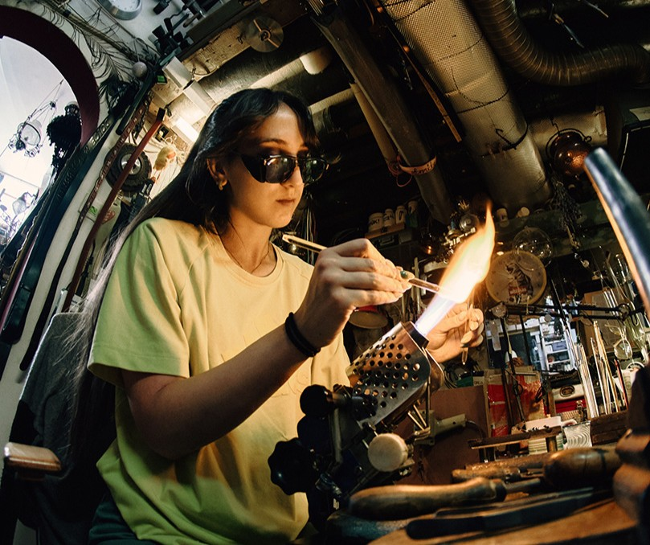

Bestsellers
ORDER YOUR OWN
Next Market: 2025.05.10 Budaro kézműves vásár

About Us
Rozana Glass is a handcrafted glass design brand known for its elegant and contemporary pieces. Every piece is unique, reflecting the handmade nature of the production process and the careful attention to detail. A key technique used by Rozana Glass is lampworking, where glass rods or tubes are melted in the flame of a torch and shaped by hand. This allows the artist to create intricate, delicate forms and achieve fine details that would be difficult with larger-scale glassblowing methods. Rozana Glass aims to bring beauty and craftsmanship into everyday life, offering objects that combine artistic vision with high-quality workmanship